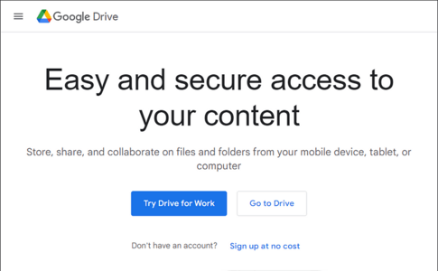

I recently picked up a book called "AWS in action" by Andreas Wittig. In the book there is a historical section on the history of development. The author, Andreas, stated he was a software engineer in the early 2000s, before cloud was popular. The gold standard back then was the separation of powers between the dev ops team and the software developer. Though, once in 2012, an important trend emerged which is true to this day. There seemed to be an increasing need for the cloud-based engineer. Basically a dev ops & software engineer hybrid employee.
"Build it & deploy it" were the words of his employers. Today this is more true than ever. In job descriptions on LinkedIn you will see "Software Engineer" as the title and AWS/Azure or Google cloud + Java Spring or .NET as the requirement. Gone are those sacred days when you could be a software engineer that "just codes". Now we must build it & deploy it.
But what is the cloud? And why do we need it?
What is the cloud?
Cloud development, or development in the cloud is writing code on remote servers.
Really, a fleet of remote servers. You essentially are given one extraordinarily huge application to manage your software. Basically an online data center with pre-built applications to optimize your application creation speed and power. Think of it like one huge Integrated Software Environment or IDE. These are IDEs but for an online, remote data center. Examples of online IDEs for remote data centers are AWS (Amazon Web Services), GCP (Google Cloud Platform) and Microsoft Azure.
Why is the cloud useful?
The most granular definition of a cloud is a remote computer.
I would consider a Virtual Private Server or just 1 remote computer as "cloud development". Some people would disagree and that is fine. But most applications you write require you to use at least 1 remote computer. Why? It requires running without interruptions, it requires a dynamic storage and hardware to scale as your app usage scales.
But, a virtual cloud system is much more than that. It is a management of many remote computers. It includes load balancers for distributing application input to multiple computers. API servers which run on their own with firewall services and private networks for niche systems.
You can create an entire company enterprise without ever having more than a PC, customers and a load of cash.
Company portals, virtual workstations, security systems, analytics and so much more are all available at your finger tips with these cloud IDEs like AWS. AWS itself has over 200 individual applications within its cloud IDE to help you manage whatever it is you tackle for your enterprise or company.
Why is cloud automation useful?
If you knew everything there was to know about a cloud system like AWS, you would probably be using it. Each of these 200 applications is meant for automating things companies have needed in the past. Don't think these 200+ applications came out of no where. At some point, somewhere, a company or industry needed these applications.
And Amazon, Google, Microsoft, etc. created these for a demand. It is their job to think of a need and fill it for a good price. And damn, did they do a good job.
I have been learning AWS for the past 3 months with a Udemy course, Whiz lab and a personal project. And wow, is it highly useful. At first when I started learning AWS I believed it was too expensive and simply too abstract for a personal project. My problem at the time was, I just did not know enough.
After taking the application billing optimization section in the Udemy course I discovered how to create applications for cheap. I can now optimally choose and create applications while saving money. The reason he saved that section for near last, was you needed to learn the majority of services before it started to make sense. I am glad I persevered to the end of that course.
Now I can create an online function, database and API that takes millions of requests for 5 cents a month. I connected it to my personal blog for e-mail subscriptions. I created a backend endpoint post request in PHP for subscription news letters. Then created an API on AWS which stores all the emails and email courses on a virtual database. Before that cost optimization section I would have done this spending minimum $50 per month.
Now, I can see why automation is so useful. Automation, if done properly, can give you the power to use the cloud while spending the minimum amount of cash. Honestly, you need to use both code and AWS to truly save money. You have to become a hybrid engineer to use it right. There is no other way.
Though, if you become a software engineer, you may end up using only 50 or 60 of these applications. As the company and industry varies, the needs and cloud applications needed vary.
Storage and compute
There is a distinct difference between a cloud application which automates computation and one which automates storage. Often, cloud companies separate these two as a VPS and online cloud drive, like Google Drive. A cloud system has both storage and compute. They wrap automation applications around both of these for the power of the developer.
Specific use cases empower you through automation of storage and compute.
Is cloud worth the price?
Often it is. But what inhibits our cost savings is a lack of understanding that cloud service. Even while knowing what you are doing, perhaps the most expensive thing is renting a classical remote server. Just 1 GB RAM, 10 GB HD, 1GHz CPU costs like $3 per month on AWS and the cost sky rockets beyond that.
When you look at it, it won't seem worth it.
You could probably get 6GB RAM, 250GB SSD & and i5 intel chip for $6/month somewhere else. And I recommend it. If you can get a remote computer for cheap then use all the other cloud automation services on a remote cloud, you will have the potential to create pretty much anything. And, at scale. How? The automation is just amazing.
There is a learning curve. So far I have not figured out a way to use automation services on Amazon for cheap without buying an external computer. They really make virtual computers expensive on AWS. But, once you have one everything else it is so worth it.
To save money you need to know how to code
To truly save the most amount of money you need to know the cloud system and you need to already know how to code.
I had not realized it at the time. But, what companies are doing by hiring hybrid engineers makes sense. Sure, you can spend money on automation services and just throw money at dev ops and developers, hoping for the best. There is this haphazard way about creating a cloud application.
But, there is a more advanced way to create both at the same time and save money by using the code and automation services together. This interfacing of code and automation is what makes hybrid cloud engineers so valuable.
A dev ops person with no coding ability will never make the cost savings of a true hybrid engineer. It is a level of refinement in the code and automation that can not be done while just knowing each individually. Companies are aware of this and are hiring hybrid engineers.
Anywho, I hope you learned something.
Happy coding!
Resources
What is a VPS: How Do Virtual Private Servers Work and Why Are They Awesome?
How an API works: How an API Works and Why They Are So Cool